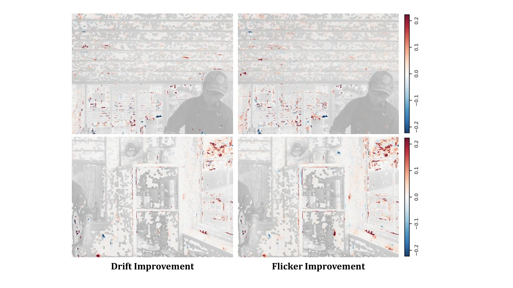
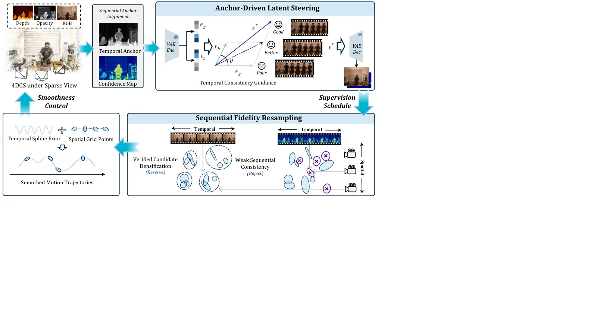
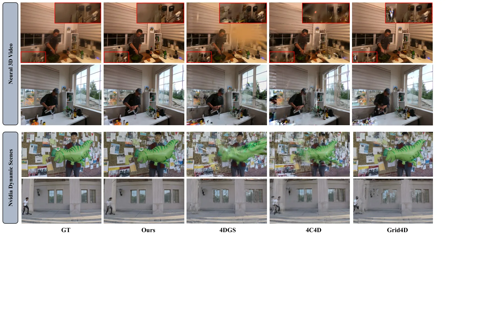

DUET4D：稀疏视角 4D 重建的自校正耦合引导
DUET4D: Self-Corrective Coupled Guidance for Sparse-View 4D Reconstruction
用冻结的单视图扩散模型当“伪观测生成器”，用当前 4D 高斯当“时空对应载体”，两个方向交替校正：锚点对齐 → latent 引导去噪 → 置信度门控的保真重采样（加密/剪枝）→ 下一轮。Neural 3D 上 PSNR 20.28、246 FPS、0.05M 高斯（Grid4D 18.30 / 80 FPS / 0.21M）。但要注意：统一预处理后才反超 SparseCam4D（24.87 vs 23.92），未统一预处理时 NVIDIA 只有 16.84，比 SparseCam4D 的 23.92 低 7 dB。
PSNR on Neural 3D
rendering FPS
Gaussian count
NVIDIA PSNR without shared preprocessing
作者、单位与技术谱系 · Research context
作者与单位
研究脉络
- 4D Gaussian Splatting（Wu et al., CVPR 2024）方法基座关系：本文的表示底座是 4D 高斯（规范高斯 + 时空特征 + 形变解码），Table 1 也把 4DGS 作为最主要的效率/质量参照。[论文 §1、Table 1]
- SparseCam4D（Pan et al., CVPR 2026）方法上游关系：SparseCam4D 用视频扩散模型合成伪观测解决稀疏视角问题，本文明确指出其“迭代查询 VDM 算力不现实”，于是换成冻结 SDM + 锚点引导，并复用其预处理做严格对照。[论文 §1、§4.1]
- Grid4D / 4C4D（2024/2026 稀疏视角路线）对照上游关系：这两条线代表“纹理正则 + 高斯衰减”的稀疏视角方案，本文的论点正是它们在大视角漂移下不足，需要更强生成先验。[论文 §1、Table 1]
合作网络
- HKUST(GZ) × XGRIDS香港科技大学（广州） → XGRIDS关系：共同署名（同一篇论文的两个单位）[论文首页单位编号]
- SparseCam4D 预处理管线SparseCam4D（Pan et al.） → DUET4D*关系：技术依赖（复用其预处理以构造严格对照）[论文 §4.1 与 Table 1 注释]
作者、单位与通讯关系取自首页署名块与单位编号；三条脉络均可回指正文句子与表格。除共同署名与 SparseCam4D 预处理依赖外，未发现其他公开合作边；论文未给代码仓库，因此没有可核验的代码关系。
方法本质拆解 · What actually changed
是不是微调？
不是微调扩散模型：单视图扩散模型完全冻结，不做任何再训练；被优化的是 4D 高斯的表示参数。训练-免费的部分是 latent 引导（training-free anchor-driven steering），代价是要多轮“生成—重采样—再生成”的迭代。
有没有额外约束？
新增了两类约束：一是时空平滑正则，用样条形变轨迹的二阶差分抑制局部抖动；二是置信度门控的保真重采样，相当于对基元增长加了硬约束——只有被多视角/多时刻反复支持的差异才允许加密，持续不一致的基元被剪掉。
推理/后端到底做了什么？
后端不是简单渲染：每轮先用当前高斯渲染多视角、与伪观测做序列对齐，再在扩散去噪的 latent 空间施加引导，然后把 2D 差异经置信度门控抬到 3D 基元层做加密/剪枝，最后用平滑正则更新形变场并进入下一轮。
方法本质是什么？
本质是把“生成先验”从一次性监督改造成闭环中的一个受控扰动源：表示负责提供时空对应与置信度，先验只负责补外观；两者互相校验的结果是画质提升的同时基元数下降一个数量级。代价是每轮都要跑扩散，且强依赖初始几何的质量。
输入稀疏多视角视频，冻结单视图扩散模型 + 可优化的 4D 高斯；改变的是“伪监督进入表示的位置与门控方式”，直接效果是 Neural 3D 上 20.28 dB / 246 FPS / 0.05M 基元。

结论与问题Conclusion & Motivation
核心结论
稀疏视角 4D 的欠约束不能靠“更强的生成模型”单独解决，因为生成结果本身带空间漂移：伪观测与真实观测之间存在系统偏差，盲目加密只会把偏差固化成冗余基元和漂浮物。DUET4D 的结论是让生成与表示互相当对方的校验器——高斯证据给扩散模型提供时空锚点，扩散结果只在被置信度反复支持的位置改变表示。这样做的直接收益是“同等或更好画质下基元少一个数量级”：Neural 3D 上 0.05M 高斯、246 FPS，而 Grid4D 是 0.21M、80 FPS。
动机与问题
现有 4D 高斯方法大多假设多视角足够密，视角一稀疏就出现几何扭曲、漂浮高斯和时间不一致运动。已有稀疏视角方案分两派：一派靠纹理正则与高斯衰减（4C4D、Grid4D），在大视角漂移下仍不稳；另一派引入生成先验，但视频扩散模型（如 SparseCam4D 用的 VDM）迭代查询代价过高，单视图扩散模型虽便宜却逐帧独立、缺跨视角与跨时间一致性。作者把问题拆成两个：如何让便宜的 SDM 产出时间一致的伪观测；以及如何只把“可信的”伪观测抬进 3D 表示。
方法Method
方法总览
框架是一个双向闭环，冻结的单视图扩散模型只做生成、4D 高斯只做表示。第一步 Sequential Anchor Alignment：用当前高斯渲染出的多视角图像与当前伪观测之间建立序列对齐，把“复原残差”而非整幅 RGB 在相邻视角/帧之间对齐，避免直接 warp 覆盖几何。第二步 Anchor-Driven Latent Steering：把对齐后的证据变成扩散去噪过程中的 latent 引导方向（training-free），使伪观测在时空上连贯。第三步 Sequential Fidelity Resampling：用置信度门控联合真实观测与伪监督，把 2D 差异抬到 3D 基元层，决定哪些区域加密、哪些基元剪枝。最后加平滑控制正则约束形变场，进入下一轮。
关键技术细节
时序形变用样条基函数 h_tmp,k(t) 表示连续轨迹，并加二阶差分平滑项 L_tmp = E‖d(t+Δt) − 2d(t) + d(t−Δt)‖²，抑制局部抖动但保留非刚体位移。引导强度由参数 ρ 控制（0.25/0.5/1.0），置信度门限 τ_m 控制伪监督是否被采纳（0.001/0.002/0.005/0.01）；默认 ρ=0.5、τ_m=0.002，属于“中等引导 + 中等门限”。保真重采样的关键不是“加高斯”，而是用“是否被多视角/多时刻反复支持”作为加密与剪枝的判据，因此基元数会随轮次下降而不是膨胀。

实验Experiments
实验设置
三个稀疏视角 4D 基准：NVIDIA Dynamic Scenes（Yoon et al. 2020）、Neural 3D Video（Li et al. 2022）、Google Immersive（Broxton et al. 2020）。指标为 PSNR / SSIM / LPIPS，另报 tPSNR 评时间一致性、高斯数 N_GS 与 FPS 评效率。对照包括动态高斯主线 4DGS、4D-Rotor、RealTime4DGS、Ex4DGS、Grid4D，以及稀疏视角方法 4C4D 与 SparseCam4D；对缺官方稀疏视角结果的基线用相同输入相机与协议复现。为排除数据处理带来的增益，作者额外构造 DUET4D*：与 SparseCam4D 完全相同的预处理输入、模型与优化设置不变。
实验数字与比较
Table 1：Neural 3D 上 DUET4D 20.28 dB / 0.748 SSIM / 246 FPS / 0.05M，Grid4D 18.30 / 0.709 / 80 FPS / 0.21M，4DGS 16.87 / 0.665 / 49 FPS / 0.21M。NVIDIA 上 DUET4D 16.84 / 0.480 / 127 FPS / 0.19M，而 SparseCam4D 23.92 / 0.733 / 11 FPS / 0.30M；换成统一预处理后 DUET4D* 为 24.87 / 0.744 / 123 FPS / 0.12M。Google Immersive 上 DUET4D 17.42 vs 4C4D 16.99、SparseCam4D 19.21，DUET4D* 为 20.25。Table 2（Neural 3D 消融）：基线 18.30 / 0.21M / 80 FPS → +保真重采样 18.54 / 0.04M / 268 FPS → +平滑正则 18.80 / 0.03M / 271 FPS → +朴素扩散 20.04 → +锚点对齐 20.08 → +latent 引导 20.28 / 0.05M / 246 FPS。
消融/失败边界
Table 2 的加法消融给出清晰排序：保真重采样几乎不涨 PSNR（18.30→18.54）却把基元从 0.21M 砍到 0.04M、FPS 从 80 抬到 268，说明它的贡献主要是“容量分配”而非画质；加入扩散先验才是画质跃升（18.80→20.04）；锚点对齐与 latent 引导各自再带来小幅但一致的时间一致性改善（tPSNR 37.99）。失败边界写在 §4.4：当初始几何严重损坏，或物体运动极快、长期被遮挡时，高斯证据不足，置信度机制会保守地退化成“单视图独立复原”，能限制误差传播但补不出从未被观测到的内容。超参敏感性（Table 3）显示引导过强（ρ=1.0）会把 PSNR 压回 20.06 并恶化 LPIPS，门限过松（0.01）也会掉到 20.12，说明这个闭环对门控参数并不算完全鲁棒。
局限与迁移Limitations & Transfer
局限与待核验
作者承认的限制是“依赖当前高斯表示构造时空对应”，初始几何坏或快速运动+长遮挡时无解，未来要做长程对应聚合与按需伪视角调度。我们要额外核验四点：一是“在三个数据集上平均 PSNR 最高”的表述只对 DUET4D* 成立，未经统一预处理时 NVIDIA 上比 SparseCam4D 低 7 dB，比较必须成对读；二是预处理到底做了什么（相机重采样？曝光对齐？）正文未展开，而它显然主导了 NVIDIA 的差距；三是消融只在 Neural 3D 一个数据集上做，且各配置的高斯数差异极大（0.21M→0.03M），PSNR 与容量是耦合变化的；四是未给代码或项目页，重实现成本高。
与你研究路线的关系
这篇的方法论比具体模块更值得迁移：它示范了“让两个不完美的东西互相校验”——表示给先验提供锚点、先验只在校验通过处改表示——这与我们在状态估计里让几何约束与学习先验互相门控是同一结构。可直接借用的两个机制是置信度门控的加密/剪枝判据（用“是否被多视角多时刻支持”代替单一阈值）与二阶差分平滑正则（对形变/轨迹抖动的通用约束，可平移到我们平滑器的过程噪声建模）。另外它是一次很好的“对照卫生”教学案例：下一步实验建议在我们自己的消融表里固定预处理来源、显式标注 DUET4D/DUET4D* 式变体，避免把输入分布差异误记为方法增益。



